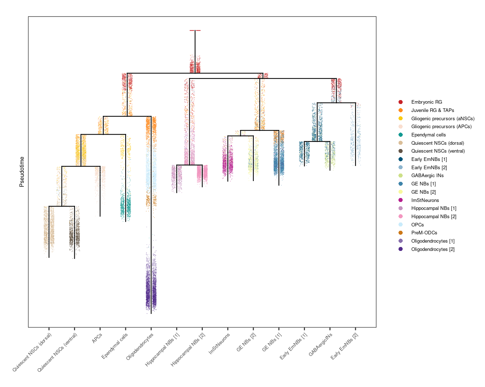
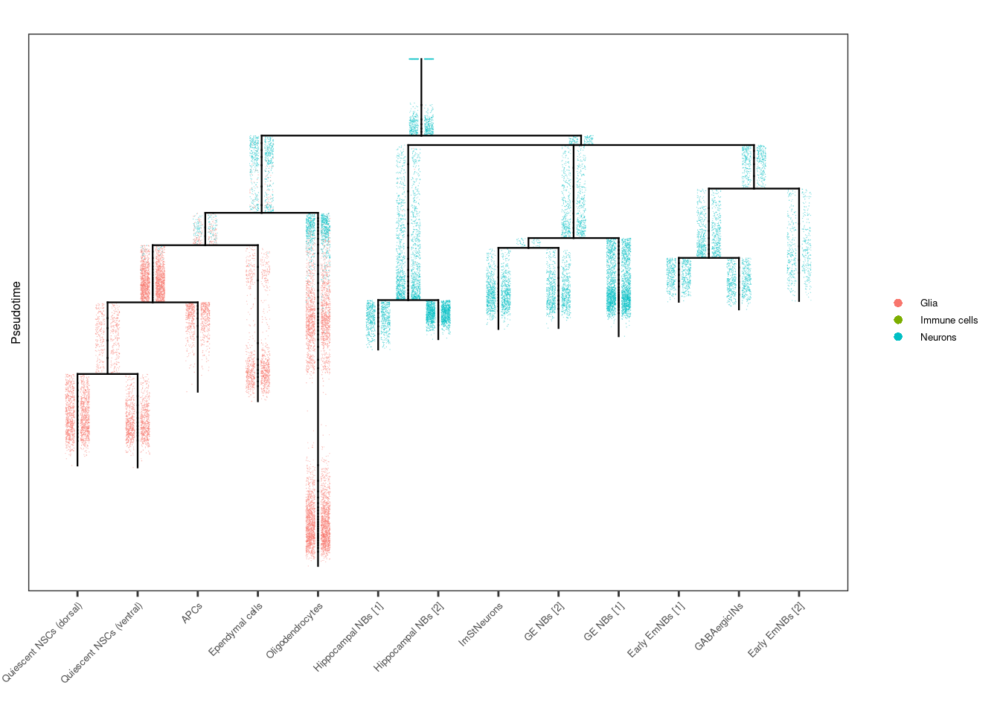
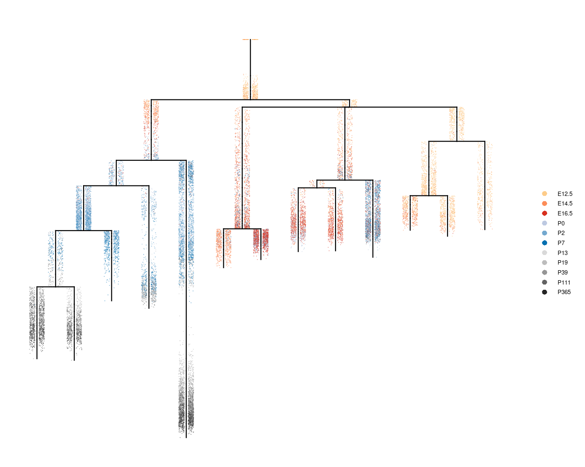
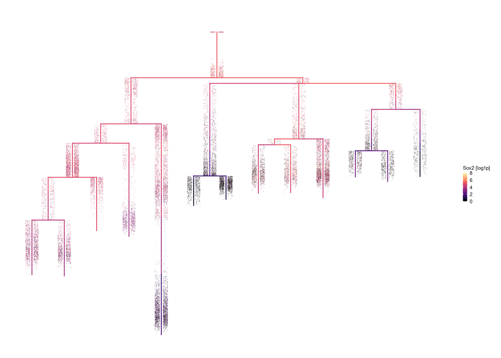
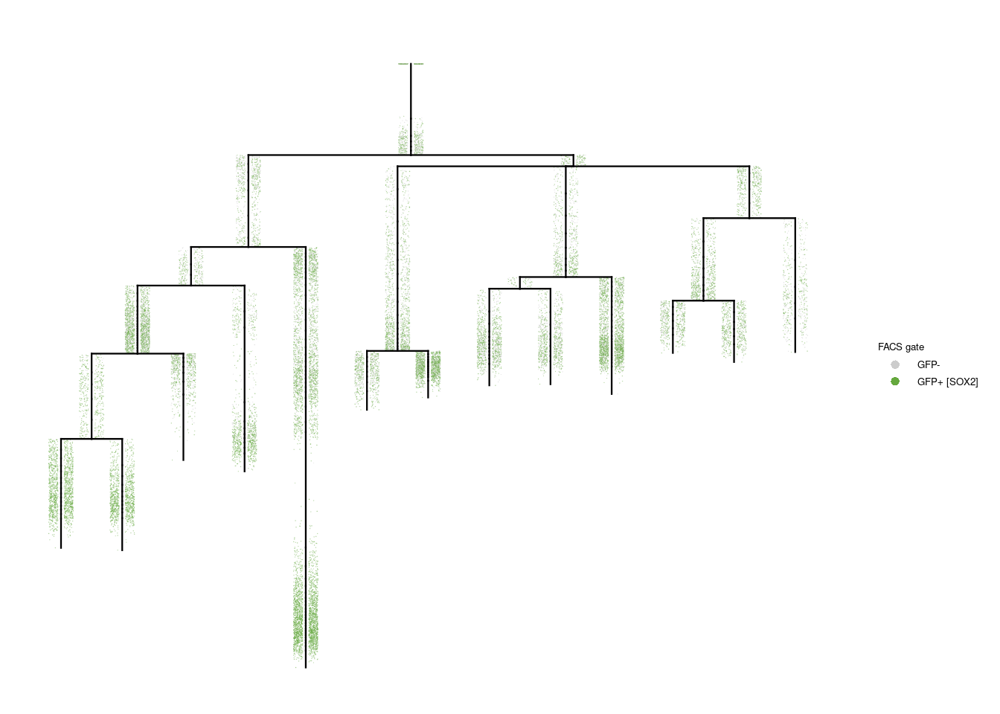

Last updated: 2021-03-23
Checks: 7 0
Knit directory: forebrain-atlas_workflowr/
This reproducible R Markdown analysis was created with workflowr (version 1.6.2). The Checks tab describes the reproducibility checks that were applied when the results were created. The Past versions tab lists the development history.
Great! Since the R Markdown file has been committed to the Git repository, you know the exact version of the code that produced these results.
Great job! The global environment was empty. Objects defined in the global environment can affect the analysis in your R Markdown file in unknown ways. For reproduciblity it’s best to always run the code in an empty environment.
The command set.seed(20210320) was run prior to running the code in the R Markdown file. Setting a seed ensures that any results that rely on randomness, e.g. subsampling or permutations, are reproducible.
Great job! Recording the operating system, R version, and package versions is critical for reproducibility.
Nice! There were no cached chunks for this analysis, so you can be confident that you successfully produced the results during this run.
Great job! Using relative paths to the files within your workflowr project makes it easier to run your code on other machines.
Great! You are using Git for version control. Tracking code development and connecting the code version to the results is critical for reproducibility.
The results in this page were generated with repository version da0cf96. See the Past versions tab to see a history of the changes made to the R Markdown and HTML files.
Note that you need to be careful to ensure that all relevant files for the analysis have been committed to Git prior to generating the results (you can use wflow_publish or wflow_git_commit). workflowr only checks the R Markdown file, but you know if there are other scripts or data files that it depends on. Below is the status of the Git repository when the results were generated:
Untracked files:
Untracked: code/core_functions.R
Untracked: code/core_functions_supp.R
Untracked: code/core_settings.R
Untracked: data/AUC_pathways/
Untracked: data/Ependymoma_2020/
Untracked: data/Richards_2021/
Untracked: data/URD/
Untracked: data/annot/
Untracked: data/cyclone/
Untracked: data/external_metadata/
Untracked: data/forebrain_normal.h5ad
Untracked: data/forebrain_normal_E12_5.h5ad
Untracked: data/forebrain_normal_E12_5_subset_neuronal_glial.h5ad
Untracked: data/forebrain_normal_E14_5.h5ad
Untracked: data/forebrain_normal_E14_5_subset_neuronal_glial.h5ad
Untracked: data/forebrain_normal_E16_5.h5ad
Untracked: data/forebrain_normal_E16_5_subset_neuronal_glial.h5ad
Untracked: data/forebrain_normal_P0.h5ad
Untracked: data/forebrain_normal_P0_subset_neuronal_glial.h5ad
Untracked: data/forebrain_normal_P111.h5ad
Untracked: data/forebrain_normal_P111_subset_neuronal_glial.h5ad
Untracked: data/forebrain_normal_P13.h5ad
Untracked: data/forebrain_normal_P13_subset_neuronal_glial.h5ad
Untracked: data/forebrain_normal_P19.h5ad
Untracked: data/forebrain_normal_P19_subset_neuronal_glial.h5ad
Untracked: data/forebrain_normal_P2.h5ad
Untracked: data/forebrain_normal_P2_subset_neuronal_glial.h5ad
Untracked: data/forebrain_normal_P365.h5ad
Untracked: data/forebrain_normal_P365_subset_neuronal_glial.h5ad
Untracked: data/forebrain_normal_P39.h5ad
Untracked: data/forebrain_normal_P39_subset_neuronal_glial.h5ad
Untracked: data/forebrain_normal_P7.h5ad
Untracked: data/forebrain_normal_P7_subset_neuronal_glial.h5ad
Untracked: data/forebrain_normal_merged_RG_NSC_lineage.h5ad
Untracked: data/forebrain_normal_merged_RG_aNSC_lineage.h5ad
Untracked: data/forebrain_normal_merged_subset_neuronal_glial.h5ad
Untracked: data/forebrain_normal_merged_subset_neuronal_glial_cleaned.h5ad
Untracked: data/forebrain_normal_merged_subset_neuronal_glial_cleaned_harmony.h5ad
Untracked: data/forebrain_normal_merged_subset_neuronal_glial_subset_RG_OPC_NSC_lineage.h5ad
Untracked: data/forebrain_normal_merged_subset_neuronal_glial_subset_RG_OPC_NSC_lineage_cleaned.h5ad
Untracked: data/forebrain_normal_subset_OPCs.h5ad
Untracked: data/forebrain_normal_subset_RG.h5ad
Untracked: data/forebrain_normal_subset_aNSCs.h5ad
Untracked: data/forebrain_normal_subset_embryonic_RG.h5ad
Untracked: data/forebrain_normal_subset_embryonic_RG_cleaned.h5ad
Untracked: data/forebrain_normal_subset_embryonic_RG_cleaned_wo_gliogenic.h5ad
Untracked: data/forebrain_normal_subset_ependymal.h5ad
Untracked: data/forebrain_normal_subset_ependymal_cleaned.h5ad
Untracked: data/forebrain_normal_subset_juvenile_RG_TAPs.h5ad
Untracked: data/forebrain_normal_subset_juvenile_RG_TAPs_subset_juvenile_RG.h5ad
Untracked: data/forebrain_normal_subset_neuronal_glial.h5ad
Untracked: data/forebrain_normal_subset_neuronal_glial_cleaned.h5ad
Untracked: data/forebrain_normal_subset_neuronal_glial_cleaned_subset_NBs.h5ad
Untracked: data/forebrain_normal_subset_neuronal_glial_cleaned_subset_NBs_cleaned.h5ad
Untracked: data/forebrain_normal_subset_neuronal_glial_cleaned_subset_OPCs.h5ad
Untracked: data/forebrain_normal_subset_neuronal_glial_cleaned_subset_RG.h5ad
Untracked: data/forebrain_normal_subset_neuronal_glial_cleaned_subset_RG_NSC_OPC_lineage.h5ad
Untracked: data/forebrain_normal_subset_neuronal_glial_cleaned_subset_RG_NSC_lineage.h5ad
Untracked: data/forebrain_normal_subset_neuronal_glial_cleaned_subset_RG_NSC_lineage_cleaned.h5ad
Untracked: data/forebrain_normal_subset_neuronal_glial_cleaned_subset_RG_NSC_lineage_v2.h5ad
Untracked: data/forebrain_normal_subset_neuronal_glial_cleaned_subset_RG_NSC_lineage_v2_cleaned.h5ad
Untracked: data/forebrain_normal_subset_neuronal_glial_cleaned_subset_ependymal.h5ad
Untracked: data/forebrain_normal_subset_neuronal_glial_cleaned_subset_ependymal_cleaned.h5ad
Untracked: data/forebrain_normal_subset_neuronal_glial_cleaned_subset_neuroblasts.h5ad
Untracked: data/forebrain_normal_subset_neuronal_glial_cleaned_subset_qNSCs.h5ad
Untracked: data/forebrain_normal_subset_qNSCs.h5ad
Untracked: data/gene-groups/
Untracked: data/logreg/
Untracked: data/metadata/
Untracked: data/metadata_QC_normal.csv.gz
Untracked: data/metadata_QC_normal_pass.csv.gz
Untracked: data/metadata_experiment.tsv
Untracked: data/monocle_3/
Untracked: data/pagoda/
Untracked: data/scenic/
Untracked: data/scrublet_scores/
Untracked: data/supplementary_data/
Untracked: figures/
Untracked: output/normal/
Untracked: output/normal_merged_RG_NSC_lineage/
Untracked: output/normal_merged_RG_aNSC_lineage/
Untracked: output/normal_subset_OPCs/
Untracked: output/normal_subset_embryonic_RG_cleaned/
Untracked: output/normal_subset_ependymal_cleaned/
Untracked: output/normal_subset_neuronal_glial_cleaned_subset_NBs_cleaned/
Untracked: output/normal_subset_neuronal_glial_cleaned_subset_RG_NSC_lineage/
Untracked: output/normal_subset_neuronal_glial_cleaned_subset_qNSCs/
Untracked: output/normal_subset_qNSCs/
Unstaged changes:
Deleted: analysis/about.Rmd
Deleted: analysis/license.Rmd
Note that any generated files, e.g. HTML, png, CSS, etc., are not included in this status report because it is ok for generated content to have uncommitted changes.
There are no past versions. Publish this analysis with wflow_publish() to start tracking its development.
Loading required package: MatrixRegistered S3 method overwritten by 'gplots':
method from
reorder.factor gdataplotTree_adjusted <- function(object, label=NULL, label.type="search", title=label, legend=T, legend.title="", legend.point.size=6*cell.size, plot.tree=T, tree.alpha=1, tree.size=0.4, plot.cells=T, cell.alpha=0.6, cell.size=0.2, label.x=T, label.segments=F, discrete.ignore.na=F, color.tree=NULL, continuous.colors=NULL, discrete.colors=NULL, color.limits=NULL, symmetric.color.scale=NULL, hide.y.ticks=T, cells.highlight=NULL, cells.highlight.alpha=1, cells.highlight.size=2) {
# Validation of parameters
if (class(object) != "URD") stop("Must provide an URD object as input to plotTree.")
if (length(object@tree) == 0) stop("A tree has not been calculated for this URD object. buildTree must be run first.")
# Grab various layouts from the object
segment.layout <- object@tree$segment.layout
tree.layout <- object@tree$tree.layout
if (plot.cells) cell.layout <- object@tree$cell.layout
# Initialize ggplot and do basic formatting
the.plot <- ggplot()
if (hide.y.ticks) {
the.plot <- the.plot + scale_y_reverse(c(1,0), name="Pseudotime", breaks=NULL)
} else {
the.plot <- the.plot + scale_y_reverse(c(1,0), name="Pseudotime", breaks=seq(0, 1, 0.1))
}
the.plot <- the.plot + theme_bw() + theme(axis.ticks=element_blank(), panel.grid.major=element_blank(), panel.grid.minor=element_blank())
the.plot <- the.plot + labs(x="", title=title, color=legend.title)
# Extract expression information
if (!is.null(label)) {
# Grab data to color by
if (length(label) > 1) stop("Cannot plot by multiple labels simultaneously.")
color.data <- data.for.plot(object, label=label, label.type=label.type, as.color=F, as.discrete.list = T, cells.use=rownames(object@diff.data))
color.discrete <- color.data$discrete
color.data <- data.frame(cell=names(color.data$data), value=color.data$data, node=object@diff.data[,"node"], stringsAsFactors=F)
}
# Summarize expression information if plotting tree
if (plot.tree && !is.null(label)) {
if (!color.discrete) {
# Mean expression per node
node.data <- aggregate(color.data$value, by=list(color.data$node), FUN=mean.of.logs)
rownames(node.data) <- node.data$Group.1
node.data$n <- unlist(lapply(object@tree$cells.in.nodes, length))[node.data$Group.1]
} else {
# If uniform expression, then give that output, otherwise give NA.
node.data <- aggregate(color.data$value, by=list(color.data$node), FUN=output.uniform, na.rm=discrete.ignore.na)
rownames(node.data) <- node.data$Group.1
node.data$n <- unlist(lapply(object@tree$cells.in.nodes, length))[node.data$Group.1]
}
# Color segments according to their expression of their end node
# (Replace -0 nodes with -1 for getting expression data.)
tree.layout$node.1 <- gsub("-0","-1",tree.layout$node.1)
tree.layout$node.2 <- gsub("-0","-1",tree.layout$node.2)
tree.layout[,"expression"] <- node.data[tree.layout$node.2,"x"]
}
# Figure out color limits if plotting a non-discrete label
if (!is.null(label) && !color.discrete && is.null(color.limits)) {
# Take from cells if plotting, otherwise from tree.
if (plot.cells) color.data.for.scale <- color.data$value else color.data.for.scale <- tree.layout$expression
# Set symmetric scale automatically if not provided
if (is.null(symmetric.color.scale)) {
if (min(color.data.for.scale) < 0) symmetric.color.scale <- T else symmetric.color.scale <- F
}
if (symmetric.color.scale) {
color.mv <- max(abs(color.data.for.scale))
color.limits <- c(-1*color.mv, color.mv)
} else {
color.max <- max(color.data.for.scale)
color.min <- min(c(0, color.data.for.scale))
color.limits <- c(color.min, color.max)
}
} else if (!is.null(label) && !color.discrete) {
if (abs(color.limits[1]) == abs(color.limits[2])) symmetric.color.scale <- T else symmetric.color.scale <- F
}
# Add cells to graph
if (plot.cells) {
if (!is.null(label)) {
# Add color info to cell.layout
if (color.discrete) {
cell.layout$expression <- as.factor(color.data[cell.layout$cell, "value"])
} else {
cell.layout$expression <- color.data[cell.layout$cell, "value"]
}
# With color
if (is.null(cells.highlight)) {
# Plot all cells.
# the.plot <- the.plot + geom_point(data=cell.layout, aes(x=x,y=y,color=expression), alpha=cell.alpha, size=cell.size, shape=16)
the.plot <- the.plot + geom_point_rast(data=cell.layout, aes(x=x,y=y,color=expression), alpha=cell.alpha, size=cell.size, shape=16, stroke=0, raster.dpi=300)
# geom_point_rast(size=0.05, alpha=0.8, shape=16 +
} else {
# Plot non-highlighted cells
# the.plot <- the.plot + geom_point(data=cell.layout[setdiff(rownames(cell.layout), cells.highlight),], aes(x=x,y=y,color=expression), alpha=cell.alpha, size=cell.size, shape=16)
the.plot <- the.plot + geom_point_rast(data=cell.layout[setdiff(rownames(cell.layout), cells.highlight),], aes(x=x,y=y,color=expression), alpha=cell.alpha, size=cell.size, shape=16, stroke=0, raster.dpi=300)
# Plot highlighted cells
# the.plot <- the.plot + geom_point(data=cell.layout[cells.highlight,], aes(x=x,y=y,color=expression), alpha=cells.highlight.alpha, size=cells.highlight.size, shape=16)
the.plot <- the.plot + geom_point_rast(data=cell.layout[cells.highlight,], aes(x=x,y=y,color=expression), alpha=cells.highlight.alpha, size=cells.highlight.size, shape=16, stroke=0, raster.dpi=300)
}
} else {
# Just plain black if no label
# the.plot <- the.plot + geom_point(data=cell.layout, aes(x=x,y=y), alpha=cell.alpha, size=cell.size, shape=16)
the.plot <- the.plot + geom_point_rast(data=cell.layout, aes(x=x,y=y), alpha=cell.alpha, size=cell.size, shape=16, stroke=0, raster.dpi=300)
}
}
# If color.tree is NULL, determine what it should be.
if (is.null(label)) {
color.tree <- FALSE
} else if (is.null(color.tree)) {
if (color.discrete) color.tree <- F else color.tree <- T
}
# Add tree to graph
if (plot.tree) {
if (!is.null(label) && color.tree) {
# With color, if desired
the.plot <- the.plot + geom_segment(data=tree.layout, aes(x=x1, y=y1, xend=x2, yend=y2, color=expression), alpha=tree.alpha, size=tree.size, lineend="square")
} else {
# Just plain black if no label
the.plot <- the.plot + geom_segment(data=tree.layout, aes(x=x1, y=y1, xend=x2, yend=y2), color='black', alpha=tree.alpha, size=tree.size, lineend="square")
}
}
# Add color
if (!is.null(label)) {
if (!color.discrete) {
if (is.null(continuous.colors)) {
the.plot <- the.plot + scale_color_gradientn(colors=defaultURDContinuousColors(with.grey=T, symmetric=symmetric.color.scale), limits=color.limits)
} else {
the.plot <- the.plot + scale_color_gradientn(colors=continuous.colors, limits=color.limits)
}
} else {
if (!is.null(discrete.colors)) {
the.plot <- the.plot + scale_color_manual(values=discrete.colors)
}
}
}
# Remove legend if desired
if (!legend) {
the.plot <- the.plot + guides(color=FALSE, shape=FALSE)
} else if (!is.null(label) && color.discrete) {
# Otherwise, make the legend points bigger if coloring by a discrete value
# the.plot <- the.plot + guides(color=guide_legend(override.aes = list(size=legend.point.size, alpha=1)))
the.plot <- the.plot + guides(colour = guide_legend(override.aes = list(size=2, alpha=1),
keyheight=0.3,
default.unit="cm"))
}
# Label segment names along the x-axis?
if (label.x) {
if ("segment.names" %in% names(object@tree)) {
# Add segment names to segment.layout
segment.layout$name <- object@tree$segment.names[segment.layout$segment]
tip.layout <- segment.layout[complete.cases(segment.layout),]
} else {
# Find terminal tips
tip.layout <- segment.layout[which(segment.layout$segment %in% object@tree$tips),]
tip.layout$name <- as.character(tip.layout$segment)
}
the.plot <- the.plot + scale_x_continuous(breaks=as.numeric(tip.layout$x), labels=as.character(tip.layout$name))
if (any(unlist(lapply(tip.layout$name, nchar)) > 2)) {
the.plot <- the.plot + theme(axis.text.x = element_text(angle = 68, vjust = 1, hjust=1))
}
} else {
the.plot <- the.plot + theme(axis.text.x=element_blank())
}
# Label the segments with their number?
if (label.segments) {
segment.labels <- as.data.frame(segment.layout[,c("segment","x")])
segment.labels$y <- apply(object@tree$segment.pseudotime.limits, 1, num.mean)[segment.labels$segment]
the.plot <- the.plot + geom_label(data=segment.labels, aes(x=x, y=y, label=segment), alpha=0.5)
}
return(the.plot)
}
output.uniform <- function(x, na.rm=F) {
y <- unique(as.character(x))
if (na.rm) y <- setdiff(y, NA)
if (length(y) == 1) return(y) else return(NA)
}# celltype_colours = c(# neuronal
# "Embryonic RG" = "#635547",
# "Juvenile RG & TAPs" = "#DABE99",
# "Gliogenic precursors (aNSCs)" = "#8DB5CE",
# "Gliogenic precursors (APCs)" = "#3F84AA",
# "Quiescent NSCs [1]" = "#005579",
# "Quiescent NSCs [2]" = "#C9EBFB",
# "Early EmNBs [1]" = "#9E6762",
# "Early EmNBs [2]" = "#9E627B",
# "GE NBs [1]" = "#C19F70",
# "GE NBs [2]" = "#139992",
# "Hippocampal NBs [1]" = "#C594BF",
# "Hippocampal NBs [2]" = "#0F4A9C",
# "OPCs" = "#B51D8D",
# "ImPreMDs" = "#532C8A",
# "Oligodendrocytes [1]" = "#8870AD",
# "Oligodendrocytes [2]" = "#CC7818",
# "Ependymal cells" = "#FBBE92",
# "GABAergic INs" = "#FACB12",
# "ImStNeurons" = "#F397C0")
celltype_colours = c("Embryonic RG" = "#C72228",
"Juvenile RG & TAPs" = "#FF891C",
"Gliogenic precursors (aNSCs)" = "#FACB12",
"Gliogenic precursors (APCs)" = "#F9DECF",
"Ependymal cells" = "#139992",
"Quiescent NSCs [1]" = "#DABE99",
"Quiescent NSCs (dorsal)" = "#DABE99",
"Quiescent NSCs [2]" = "#DABE99",
"Quiescent NSCs (ventral)" = "#635547",
"Early EmNBs [1]" = "#005579",
"Early EmNBs [2]" = "#8DB5CE",
"GABAergic INs" = "#CDE088",
"GE NBs [1]" = "#3F84AA",
"GE NBs [2]" = "#F7F79E",
"ImStNeurons" = "#B51D8D",
"Hippocampal NBs [1]" = "#C594BF",
"Hippocampal NBs [2]" = "#F397C0",
"OPCs" = "#C9EBFB",
"ImPreMDs" = "#CC7818",
"PreM-ODCs" = "#CC7818",
"Oligodendrocytes [1]" = "#8870AD",
"Oligodendrocytes [2]" = "#532C8A")
# set parameters
fileID = "normal_subset_neuronal_glial_cleaned"
leiden_res = 'leiden_0_4'
leiden_res_annot = 'annot_leiden_0_4'
adata_path = paste0('data/forebrain_', fileID, '.h5ad')
py_run_string("import numpy as np")
py_run_string("import anndata as ad")
py_run_string("adata = ad.read_h5ad(r.adata_path)")
metadata_scanpy = as_tibble(py$adata$obs, rownames="cellID") %>%
rename(mt_frac = percent_mito) %>%
mutate(UMAP_dim1 = py$adata$obsm[['X_umap']][,1],
UMAP_dim2 = py$adata$obsm[['X_umap']][,2])
metadata_experiment = read_tsv("data/metadata_experiment.tsv")
── Column specification ────────────────────────────────────────────────────────
cols(
.default = col_character(),
postnatal_day = col_double(),
treatment = col_logical(),
`Estimated Number of Cells` = col_double(),
`Mean Reads per Cell` = col_double(),
`Median Genes per Cell` = col_double(),
`Number of Reads` = col_double(),
`Total Genes Detected` = col_double(),
`Median UMI Counts per Cell` = col_double()
)
ℹ Use `spec()` for the full column specifications.results_cyclone = read_csv("data/cyclone/cyclone_merged.csv.gz", col_types="ccddd") %>%
mutate(sampleID = sapply(cellID, function(cell) strsplit(cell, split="-")[[1]][3])) %>%
left_join(metadata_experiment, by="sampleID") %>%
mutate(cellID = gsub("-1", "", cellID)) %>%
select(cellID, cyclone, cyclone_G1, cyclone_S, cyclone_G2M)
results_logreg = read_csv(paste0("data/logreg/logreg_Zeisel_2018_normal.csv.gz"))
── Column specification ────────────────────────────────────────────────────────
cols(
cellID = col_character(),
prediction_Class = col_character(),
probability_Class = col_double(),
prediction_TaxonomyRank1 = col_character(),
probability_TaxonomyRank1 = col_double()
)# filter QC
metadata = left_join(metadata_scanpy, results_cyclone, by="cellID") %>%
mutate(cyclone = factor(cyclone, levels=c("G1", "S", "G2M"))) %>%
mutate(timepoint = factor(timepoint, levels=unique(timepoint)[order(unique(postnatal_day))])) %>%
left_join(results_logreg, by="cellID") %>%
mutate(leiden = get(leiden_res)) %>%
mutate(gate_gfp = gsub("SOX2_-ve", "GFP-", gate)) %>%
mutate(gate_gfp = gsub("SOX2_\\+ve", "GFP+ [SOX2]", gate_gfp))
objectURD.tree@meta$annot_leiden = left_join(objectURD.tree@meta %>% select(-annot_leiden), metadata %>% select(cellID, annot_leiden), by="cellID") %>%
pull(annot_leiden) %>% as.factor()
objectURD.tree@meta$annot_leiden = factor(objectURD.tree@meta$annot_leiden, levels = names(celltype_colours))
objectURD.tree <- nameSegments(objectURD.tree,
segments=c("1","2", "3", "4", "5", "6", "7", "8", "9", "10", "11", "12", "13"),
segment.names = c("APCs", "Early EmNBs [1]", "Early EmNBs [2]", "Ependymal cells", "GABAergicINs", "GE NBs [1]", "GE NBs [2]", "Hippocampal NBs [1]", "Hippocampal NBs [2]", "ImStNeurons", "Oligodendrocytes", "Quiescent NSCs (dorsal)", "Quiescent NSCs (ventral)"))
plt_tree_annot = plotTree_adjusted(objectURD.tree, "annot_leiden", discrete.colors=celltype_colours, title="") +
theme_publication +
guides(x = guide_axis(angle = 45)) +
theme(plot.margin = margin(t=5.5, r=5.5, b=5.5, l=20.5, unit="pt"))
plt_tree_annot
── Column specification ────────────────────────────────────────────────────────
cols(
cellID = col_character(),
prediction_Class = col_character(),
probability_Class = col_double(),
prediction_TaxonomyRank1 = col_character(),
probability_TaxonomyRank1 = col_double()
)objectURD.tree@meta$prediction_TaxonomyRank1 = left_join(objectURD.tree@meta, results_logreg, by="cellID") %>%
pull(prediction_TaxonomyRank1) %>% as.factor()
celltype_colours = c("Glia" = "#f8766d",
"Immune cells" = "#7cae00",
"Neurons" = "#00bfc4")
# #c77cff
plt_tree_annot_zeisel = plotTree_adjusted(objectURD.tree, "prediction_TaxonomyRank1", discrete.colors=celltype_colours, cell.size=0.1, title="") +
theme_publication +
guides(x = guide_axis(angle = 45))
#
# # plt_tree_annot = plotTree_adjusted(objectURD.tree, "prediction_TaxonomyRank1", title="") +
# # theme_publication +
# # guides(x = guide_axis(angle = 45))
#
#
plt_tree_annot_zeisel
colour_map = c("E12.5"="#fdcc8a",
"E14.5"="#fc8d59",
"E16.5"="#d7301f",
"P0"="#bdc9e1",
"P2"="#74a9cf",
"P7"="#0570b0",
"P13"="#d9d9d9",
"P19"="#bdbdbd",
"P39"="#969696",
"P111"="#636363",
"P365"="#252525")
objectURD.tree@meta$timepoint = factor(objectURD.tree@meta$timepoint, levels = names(colour_map))
plt_tree_timepoint = plotTree_adjusted(objectURD.tree, "timepoint", discrete.colors=colour_map, title="") +
theme_publication +
theme(axis.text.x=element_blank(),
axis.ticks.x=element_blank(),
axis.text.y=element_blank(),
axis.ticks.y=element_blank(),
axis.title.x = element_blank(),
axis.title.y = element_blank(),
panel.border = element_blank())
plt_tree_timepoint
plt_tree_expr_Sox2 = plotTree_adjusted(objectURD.tree, "Sox2", cell.size=0.1, title="") +
theme_publication +
scale_colour_viridis(option="magma") +
# scale_colour_viridis() +
# scale_fill_viridis() +
# guides(x = guide_axis(angle = 45)) +
theme(axis.text.x=element_blank(),
axis.ticks.x=element_blank(),
axis.text.y=element_blank(),
axis.ticks.y=element_blank(),
axis.title.x = element_blank(),
axis.title.y = element_blank(),
panel.border = element_blank()) +
guides(colour = guide_colorbar(barwidth = 0.3,
barheight = 2)) +
labs(colour = "Sox2 [log1p]")Scale for 'colour' is already present. Adding another scale for 'colour',
which will replace the existing scale.
plt_tree_expr_Sox2_rescaled = plt_tree_expr_Sox2 + scale_colour_viridis(option="magma", rescaler = function(x, from = NULL) {
ifelse(x<2,
scales::rescale(x,
to = c(0, 0.5),
from = c(min(x, na.rm = TRUE), 2)),
scales::rescale(x,
to = c(0.5, 1),
from = c(2, max(x, na.rm = TRUE))))}) +
guides(colour = guide_colorbar(barwidth = 0.3,
barheight = 2)) +
labs(colour = "Sox2 [log1p]") +
scale_fill_viridis(option="magma", rescaler = function(x, from = NULL) {
ifelse(x<2,
scales::rescale(x,
to = c(0, 0.5),
from = c(min(x, na.rm = TRUE), 2)),
scales::rescale(x,
to = c(0.5, 1),
from = c(2, max(x, na.rm = TRUE))))})Scale for 'colour' is already present. Adding another scale for 'colour',
which will replace the existing scale.objectURD.tree@meta$gate_gfp = left_join(objectURD.tree@meta, metadata %>% select(cellID, gate_gfp), by="cellID") %>%
pull(gate_gfp) %>% as.factor()plt_tree_GFP = plotTree_adjusted(objectURD.tree, "gate_gfp", cell.size=0.1, title="") +
theme_publication +
scale_colour_manual(values=c("GFP-"="#CCCCCC", "GFP+ [SOX2]"="#65A83E")) +
# scale_colour_viridis(option="magma") +
# scale_colour_viridis() +
# scale_fill_viridis() +
# guides(x = guide_axis(angle = 45)) +
theme(axis.text.x=element_blank(),
axis.ticks.x=element_blank(),
axis.text.y=element_blank(),
axis.ticks.y=element_blank(),
axis.title.x = element_blank(),
axis.title.y = element_blank(),
panel.border = element_blank()) +
labs(colour = "FACS gate")
plt_tree_GFP
# ggsave("figures/figure_ependymal_cells/UMAP_annot_ependymal_cells.pdf", plot=plt_UMAP_annot_ependymal, height=5, width=8.15, units="cm")
# ggsave("figures/figure_ependymal_cells/UMAP_timepoints_ependymal_cells.pdf", plot=plt_UMAP_day, height=5, width=9.15, units="cm")
# annotation
ggsave("figures/figure_neuronal_glial_lineage_tree/URD_tree_annot_neuronal_glial.pdf", plot=plt_tree_annot, height=8, width=12.15, units="cm")
# annot Zeisel
ggsave("figures/figure_neuronal_glial_lineage_tree/URD_tree_annot_Zeisel_neuronal_glial.pdf", plot=plt_tree_annot_zeisel, height=8, width=12.15, units="cm")
# timepoints
ggsave("figures/figure_neuronal_glial_lineage_tree/URD_tree_timepoint_neuronal_glial.pdf", plot=plt_tree_timepoint, height=4, width=6, units="cm")
# gene expr
ggsave("figures/figure_neuronal_glial_lineage_tree/URD_tree_expr_Sox2_neuronal_glial.pdf", plot=plt_tree_expr_Sox2, height=4, width=6, units="cm")
ggsave("figures/figure_neuronal_glial_lineage_tree/URD_tree_expr_Sox2_rescaled_neuronal_glial.pdf", plot=plt_tree_expr_Sox2_rescaled, height=4, width=6, units="cm")
ggsave("figures/figure_neuronal_glial_lineage_tree/URD_tree_GFP_neuronal_glial.pdf", plot=plt_tree_GFP, height=4, width=6, units="cm")
ggsave("figures/figure_neuronal_glial_lineage_tree/URD_tree_panel_neuronal_glial.pdf", plot=plt_tree_annot + wrap_elements(full = plt_tree_timepoint / plt_tree_expr_Sox2_rescaled), height=8.5, width=18.3, units="cm")
R version 4.0.3 (2020-10-10)
Platform: x86_64-pc-linux-gnu (64-bit)
Running under: Ubuntu 20.04.2 LTS
Matrix products: default
BLAS: /usr/lib/x86_64-linux-gnu/blas/libblas.so.3.9.0
LAPACK: /usr/lib/x86_64-linux-gnu/lapack/liblapack.so.3.9.0
locale:
[1] LC_CTYPE=en_GB.UTF-8 LC_NUMERIC=C
[3] LC_TIME=en_GB.UTF-8 LC_COLLATE=en_GB.UTF-8
[5] LC_MONETARY=en_GB.UTF-8 LC_MESSAGES=en_GB.UTF-8
[7] LC_PAPER=en_GB.UTF-8 LC_NAME=C
[9] LC_ADDRESS=C LC_TELEPHONE=C
[11] LC_MEASUREMENT=en_GB.UTF-8 LC_IDENTIFICATION=C
attached base packages:
[1] stats graphics grDevices utils datasets methods base
other attached packages:
[1] URD_1.1.1 Matrix_1.3-2 ggthemes_4.2.4 reshape2_1.4.4
[5] reticulate_1.18 kableExtra_1.3.4 knitr_1.31 ggrastr_0.2.3
[9] ggrepel_0.9.1 tibble_3.1.0 dplyr_1.0.4 readr_1.4.0
[13] patchwork_1.1.1 viridis_0.5.1 viridisLite_0.3.0 ggplot2_3.3.3
[17] workflowr_1.6.2
loaded via a namespace (and not attached):
[1] readxl_1.3.1 systemfonts_1.0.1
[3] RcppEigen_0.3.3.9.1 igraph_1.2.6
[5] plyr_1.8.6 sp_1.4-5
[7] RcppHNSW_0.3.0 GenomeInfoDb_1.24.2
[9] digest_0.6.27 htmltools_0.5.1.1
[11] gdata_2.18.0 fansi_0.4.2
[13] magrittr_2.0.1 ROCR_1.0-11
[15] openxlsx_4.2.3 graphlayouts_0.7.1
[17] gmodels_2.18.1 matrixStats_0.58.0
[19] xts_0.12.1 svglite_2.0.0
[21] colorspace_2.0-0 rappdirs_0.3.3
[23] rvest_0.3.6 haven_2.3.1
[25] xfun_0.21 crayon_1.4.1
[27] RCurl_1.98-1.2 jsonlite_1.7.2
[29] hexbin_1.28.2 zoo_1.8-8
[31] glue_1.4.2 polyclip_1.10-0
[33] gtable_0.3.0 zlibbioc_1.34.0
[35] XVector_0.28.0 webshot_0.5.2
[37] DelayedArray_0.14.1 car_3.0-10
[39] SingleCellExperiment_1.10.1 BiocGenerics_0.34.0
[41] DEoptimR_1.0-8 abind_1.4-5
[43] VIM_6.1.0 scales_1.1.1
[45] ggplot.multistats_1.0.0 DBI_1.1.1
[47] Rcpp_1.0.6 laeken_0.5.1
[49] foreign_0.8-81 proxy_0.4-24
[51] stats4_4.0.3 vcd_1.4-8
[53] httr_1.4.2 gplots_3.1.1
[55] RColorBrewer_1.1-2 ellipsis_0.3.1
[57] farver_2.1.0 pkgconfig_2.0.3
[59] nnet_7.3-15 sass_0.3.1
[61] utf8_1.1.4 labeling_0.4.2
[63] tidyselect_1.1.0 rlang_0.4.10
[65] later_1.1.0.1 munsell_0.5.0
[67] cellranger_1.1.0 tools_4.0.3
[69] cli_2.3.1 generics_0.1.0
[71] ranger_0.12.1 evaluate_0.14
[73] stringr_1.4.0 yaml_2.2.1
[75] fs_1.5.0 tidygraph_1.2.0
[77] zip_2.1.1 robustbase_0.93-7
[79] caTools_1.18.1 purrr_0.3.4
[81] RANN_2.6.1 ggraph_2.0.5
[83] xml2_1.3.2 compiler_4.0.3
[85] rstudioapi_0.13 beeswarm_0.2.3
[87] curl_4.3 e1071_1.7-4
[89] tweenr_1.0.1 smoother_1.1
[91] bslib_0.2.4 stringi_1.5.3
[93] highr_0.8 ps_1.6.0
[95] RSpectra_0.16-0 forcats_0.5.1
[97] lattice_0.20-41 vctrs_0.3.6
[99] pillar_1.5.0 lifecycle_1.0.0
[101] lmtest_0.9-38 jquerylib_0.1.3
[103] data.table_1.14.0 bitops_1.0-6
[105] irlba_2.3.3 httpuv_1.5.5
[107] GenomicRanges_1.40.0 R6_2.5.0
[109] pcaMethods_1.80.0 promises_1.2.0.1
[111] KernSmooth_2.23-18 gridExtra_2.3
[113] rio_0.5.26 vipor_0.4.5
[115] IRanges_2.22.2 codetools_0.2-18
[117] boot_1.3-27 MASS_7.3-53.1
[119] gtools_3.8.2 assertthat_0.2.1
[121] destiny_3.2.0 SummarizedExperiment_1.18.2
[123] rprojroot_2.0.2 minpack.lm_1.2-1
[125] withr_2.4.1 S4Vectors_0.26.1
[127] GenomeInfoDbData_1.2.3 diptest_0.75-7
[129] parallel_4.0.3 hms_1.0.0
[131] grid_4.0.3 tidyr_1.1.2
[133] class_7.3-18 rmarkdown_2.7
[135] carData_3.0-4 Cairo_1.5-12.2
[137] Rtsne_0.15 git2r_0.28.0
[139] TTR_0.24.2 ggforce_0.3.2
[141] scatterplot3d_0.3-41 Biobase_2.48.0
[143] ggbeeswarm_0.6.0